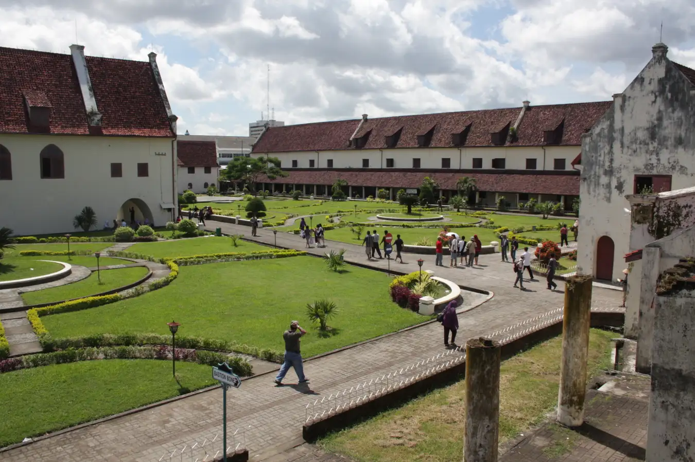
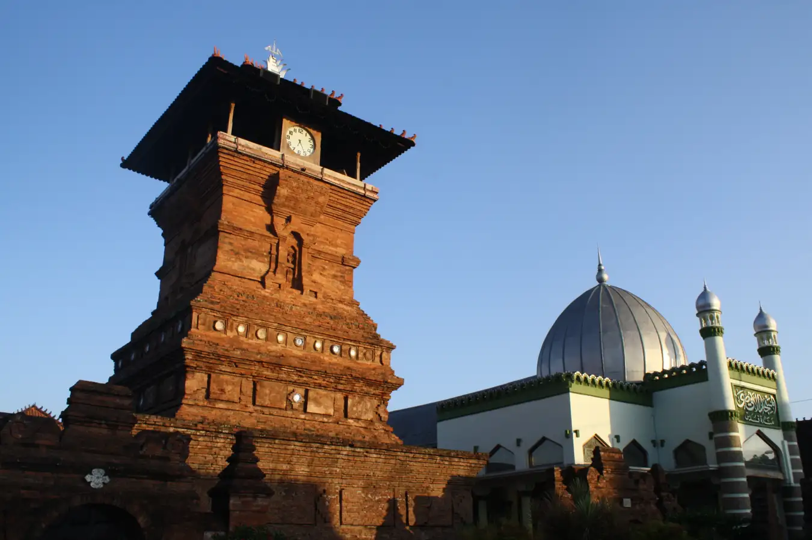
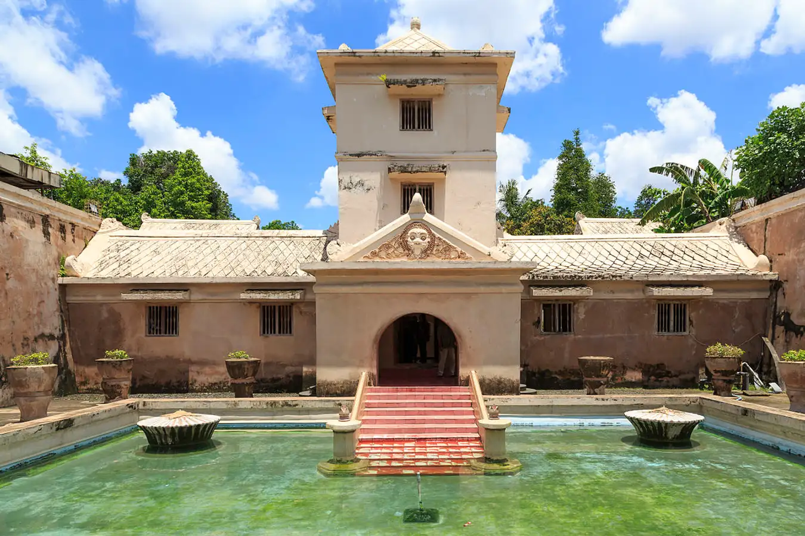

| Gambar | Nama | Lokasi | Deskripsi |
|---|---|---|---|
|  | Fort Rotterdam | Kota Makassar, Sulawesi Selatan | Tempat wisata bersejarah Benteng Fort Rotterdam dibangun pada masa kerajaan Gowa-Tallo, tepatnya pada masa pemerintahan raya Gowa ke-9 di tahun 1667. Objek wisata sejarah di Indonesia ini terletak di pinggir pantai sebelah barat kota Makassar dan dulunya bernama Benteng Ujung Pandang. |
|  | Masjid Menara Kudus | Kota Kudus, Jawa Tengah | Masjid Menara Kudus dibangun sekitar tahun 1549. Dari penampakannya yang unik saja dapat terlihat jika bangunan tempat ibadah masyarakat Islam tersebut merupakan perpaduan kebudayaan Hindu-Buddha dengan Islam. |
|  | Taman Sari | Kota Yogyakarta, Daerah Istimewa Yogyakarta | Salah satu destinasi wisata bersejarah Indonesia dan ikonik adalah Taman Sari. Bangunan yang memakan waktu 9 tahun masa pembangunan ini pertama kali digagas pada masa Sultan Hamengku Buwono I berkuasa sebagai taman atau kebun istana Keraton Ngayogyakarta Hadiningrat. |